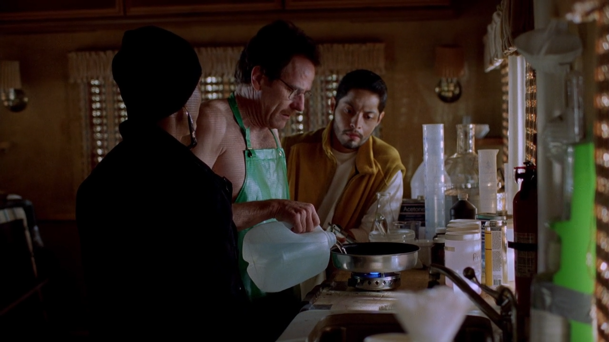

<!DOCTYPE html>
<html lang="en">
    <head>
        <meta charset="UTF-8">
        <meta name="viewport" content="width=device-width, initial-scale=1.0">
        <meta http-equiv="X-UA-Compatible" content="ie=edge">
        <title>Gym Stuff - Diet</title>
        <link rel="stylesheet" href="style.css">
    </head>
</html>
<body>
    <nav>
         <ul>
            <li><a href="why.html">Why Lift</a></li>
            <li><a href="how.html">How to Lift</a></li>
            <div id="nav-center">
                <li><a href="index.html">Gym Stuff</a></li>
            </div>
            <div id="nav-right">
                <li><a href="routines-progress.html">Routines and Progress</a></li>
                <li><a id="nav-active" href="diet.html">Diet</a></li>
            </div>
        </ul>
    </nav>

    <div id="content">
        <h1>You Are What You Eat (Hopefully, a Downright Mass Monster)</h1>
        <p>You won't get incredibly swole, jacked, and ripped by just lifting. Unfortunately, you have to put in effort in the form of controlling and watching what you eat every day, especially right before and after working out at the gym. You should, before anything else, figure out the goals that work best for you, and base your priorities off of them. They will probably, however, change over time, as you change. You will often hear people say that they're either bulking (generally eating a lot more food for easier gains in strength and muscle) or cutting (generally eating less food for a lower body-fat percentage). Quite a bit of those same people also alternate between the two every once in a while, as they see fit. BTW, I'm just some teenager who works out to look good and lift heavy, not a pro, educated doctor who knows infinitely more about eating healthy.</p>
        
        <h2><strike>Time to Start Blasting Anabolic Steroids</strike> Counting Macros</h2>
        <h3>Protein</h3>
        <p>Protein is probably one of the most important differences between a boring regular diet and an totally awesome, cool, radical, and wicked sick bodybuilding diet. You can get it predominately from animal products, some plant-based sources, and protein powder (usually from whey). You not only need it for the basic functioning of your body and stuff, but it <strike>really really helps</strike> is absolutely required for resistance training (repairing all those poor, worn-out muscles of yours). If you dig in to find the right amount, you'll get conflicting recommendations. However, people forget that I am the one, definite, omnipotent, and all-knowing authority regarding this kind of stuff, and I now officially declare that about a gram of protein every day per every pound of body weight is a pretty good rule of thumb. You can get pretty creative with how and where you use your protein powder.</p>
        <h3>Creatine</h3>
        <p>Creatine is a naturally-occurring non-protein amino acid. I honestly don't know what that means, but I found it on an official-looking article online. It can be found in red meat and seafood, but people who are serious about lifting often take it in the form of a fine, suspiciously-white powder that's usually mixed with water (or lined up and snorted). It helps with making gains more easily, recovering better, being able to tolerate more exercise, and some other health-related benefits. It of course has some side-effects, but who cares about those anyway. Be sure to have the safe, recommended amount.</p>
        <h3>Pre-Workout</h3>
        <p>I personally don't take pre-workout, haven't ever took it, and don't plan on ever taking it, but it's essentially just caffeine and a bunch of other factory-sludge-by-product that makes your heart and muscles go crazy before any lifting, especially when sleep-deprived. It comes in tons of flavors, and people often mix a scoop or two with water and mix it. Dry-scooping is the practice of just tossing all the powder into your mouth without another liquid. Legends say there are some who even mix pre-workout with caffeine-heavy energy drinks for maximal effect and heart attack intensity. Pre-workout can also come in the form of reading long-winded breakup texts from the past.</p>
        <h3>Everything Else is Here, Because I'm Too Lazy</h3>
        <p>Carbohydrates, fats, fiber, calories, and all the other macronutrients out there that I didn't already mention are roughly the same, but be sure to adjust the amount more or less depending on your goals. Staying away from "junk" food is pretty much always good advice too. Lots of calculators and more comprehensive guides can be found online. Micronutrients are always a must regardless of anything, because they're more about health and your body's functioning. Also, don't do steroids, kids. Stay natty.</p>
    </div>
</body>
